library(ggplot2)
library(ggrepel)HW1
helpful links:
https://arxiv.org/pdf/1404.1100.pdf (PCA example)
ISL 12.5 p. 538
1 True or false
Examine whether the following statements are true or false and provide one line justification.
(a) The data collection process usually has little-to-no influence on the outcome of a predictive modeling problem.
FALSE. It has a huge influence! If you wanted to estimate the number of voters supporting Democrats in the next election and only sampled people at a Republican convention, you wolambdauld have very unreliable results.
(b) Eigenvalues obtained from principal component analysis are always non-negative.
TRUE. From the lecture, since we’re performing the eigendecomposition on the sample covariance matrix, and the eigenvalues of that represent the variance of the components.
(c) The first principal vector and the second principal vector are always orthogonal.
TRUE. Since we want the second principal vector to be uncorrelated with the first, we make them orthogonal. (source: p. 501 ISL)
(d) The singular values of a square matrix M are the same as the eigenvalues of M.
FALSE. They are the square roots of the non-zero eigenvalues of \(M^TM\) or \(MM^T\). (Source: textbook and question #2 of this homework).
(e) Principal component analysis can be used to create a low dimensional projection of the data.
TRUE. It projects the data onto the space spanned by the principal component loading vectors \(\phi_1,\phi_2...\)
(f) Eigenvalues of a matrix are always non-negative.
FALSE. Counterexample below:
A = matrix(-1,2,2)
eigen(A)eigen() decomposition
$values
[1] 0 -2
$vectors
[,1] [,2]
[1,] -0.7071068 0.7071068
[2,] 0.7071068 0.7071068(g) After applying K-means, the vectors representing the first cluster center and the second
cluster center are always orthogonal.
2 SVD
(a) Show that…
\[ M = UDV^T = UD \begin{bmatrix} -v_1^T- \\ \vdots \\ -v_n^T - \end{bmatrix} = U \begin{bmatrix} -d_1 v_1^T- \\ \vdots \\ -d_n v_n^T- \end{bmatrix} = \]
\[ \begin{bmatrix} u_1 u_2 \ldots u_n \end{bmatrix} \begin{bmatrix} -d_1 v_1^T- \\ \vdots \\ -d_n v_n^T- \end{bmatrix} = \text{using column x row multiplication} = \sum_{i=1}^{n} u_i d_i v_i^T \]
(b) For \(1 ≤ i ≤ n\), show that..
\[ \begin{align} M = UDV^T \\ M^TM = (UDV^T)^T(UDV^T) \\ M^TM = VDU^TUDV^T = VD^2V^T \end{align} \]
Above, since D is diagonal \(D^T = D\) and since U is orthogonal, \(U^TU = I\) . Then, this is equivalent to the eigendecomposition of \(M^TM\) so each column of \(V\) corresponds to the \(i^{th}\) eigenvalue and each entry of \(D^2\) is the squared \(i^{th}\) singular value, which is just the eigenvalue corresponding to the eigenvector.
\[ M = UDV^T \\ MM^T = UDV^T(UDV^T)^T \\ MM^T = UDV^TVDU^T = UD^2U^T \]
The reasoning here is exactly the same as above. However, \(MM^T\) will be an m x m matrix as opposed to \(M^TM\) which will be n x n. Though I’m not clear if there are consequences or issues with this.
(c) Generate a random matrix M of size n×n for n…
sizes = c(2,4,6,8,16,32,64,128,256,512,1024,2048)
creation_time = c()
svd_time = c()
# used resource here for computing time differences: https://www.geeksforgeeks.org/how-to-subtract-time-in-r/
for (i in sizes) {
start_time <- Sys.time()
M = matrix(data=1,nrow=i,ncol=i)
end_time <- Sys.time()
start_svd <- Sys.time()
svd(M)
end_svd <- Sys.time()
creation_diff = as.double(difftime(end_time,start_time,Sys.time()))
creation_time = append(creation_time,creation_diff) # bad practice to loop like this?
svd_diff = as.double(difftime(end_svd,start_svd,Sys.time()))
svd_time = append(svd_time,svd_diff)
}
plot(sizes,creation_time,main="matrix of size n x n vs. time to create (in seconds)")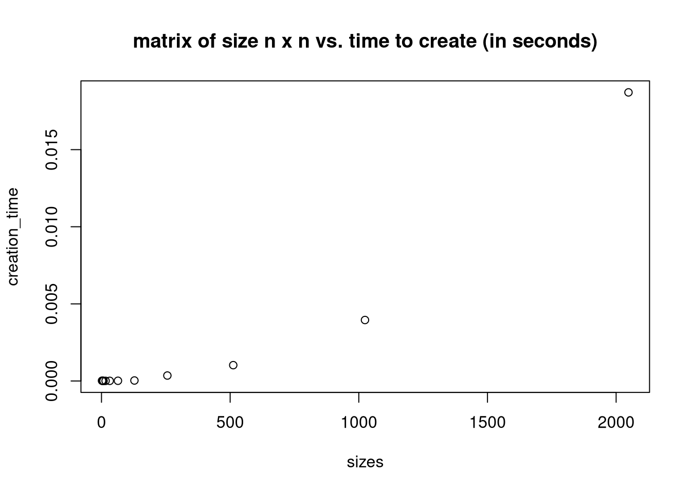
plot(sizes,svd_time, main="matrix of size n x n vs. time to perform svd (in seconds)")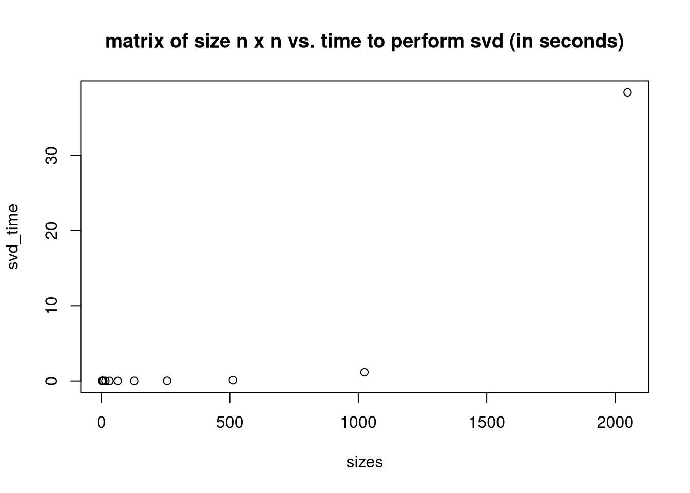
3 Power Method
3.1
test = matrix(c(1,2,3,2,-1,4,3,4,-5), nrow=3, ncol = 3, byrow = TRUE)
power <- function(A) {
# arbitrary starting vector
w0 = matrix(A[,1])
#loop here
n = 200 #number of times to loop?
wk = A %*% w0 #intialize
for (i in seq(1,n))
wk = A %*% wk
sk1 = max(abs(wk))
wk/sk1
}
power(test) [,1]
[1,] 0.2223258
[2,] 0.5253028
[3,] -1.0000000eigen(test)eigen() decomposition
$values
[1] 4.610843 -1.842654 -7.768189
$vectors
[,1] [,2] [,3]
[1,] -0.6890036 0.6985555 -0.1931172
[2,] -0.5672220 -0.6856083 -0.4562899
[3,] -0.4511466 -0.2048451 0.86862263.2
B = matrix(c(5,1,0,1,4,0,0,0,1), nrow=3, ncol = 3, byrow = TRUE)
power(B) [,1]
[1,] 1.000000
[2,] 0.618034
[3,] 0.000000eigen(B)eigen() decomposition
$values
[1] 5.618034 3.381966 1.000000
$vectors
[,1] [,2] [,3]
[1,] 0.8506508 0.5257311 0
[2,] 0.5257311 -0.8506508 0
[3,] 0.0000000 0.0000000 14 PCA
(a) Use apply() function to compute mean and variance of all the four columns
apply(USArrests, MARGIN=2, FUN=mean) Murder Assault UrbanPop Rape
7.788 170.760 65.540 21.232 apply(USArrests, MARGIN=2, FUN=var) Murder Assault UrbanPop Rape
18.97047 6945.16571 209.51878 87.72916 (b) Plot a histogram for each of the four columns
hist(USArrests$Murder)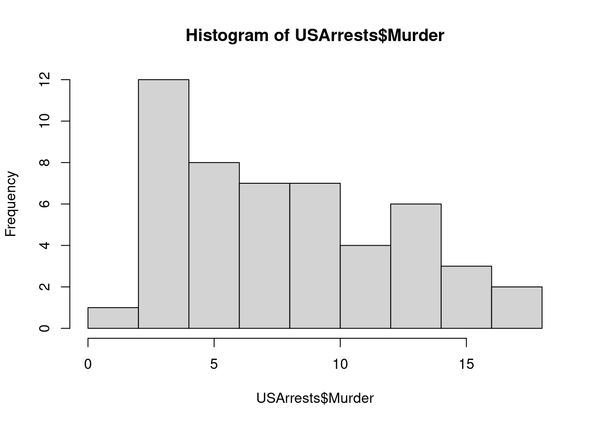
hist(USArrests$Assault)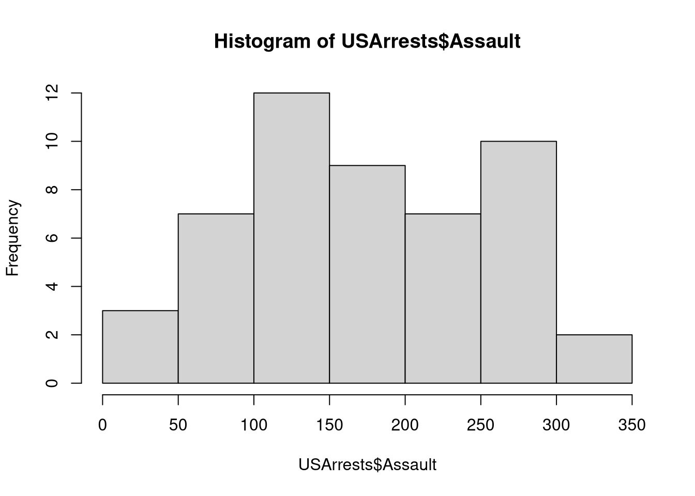
hist(USArrests$UrbanPop)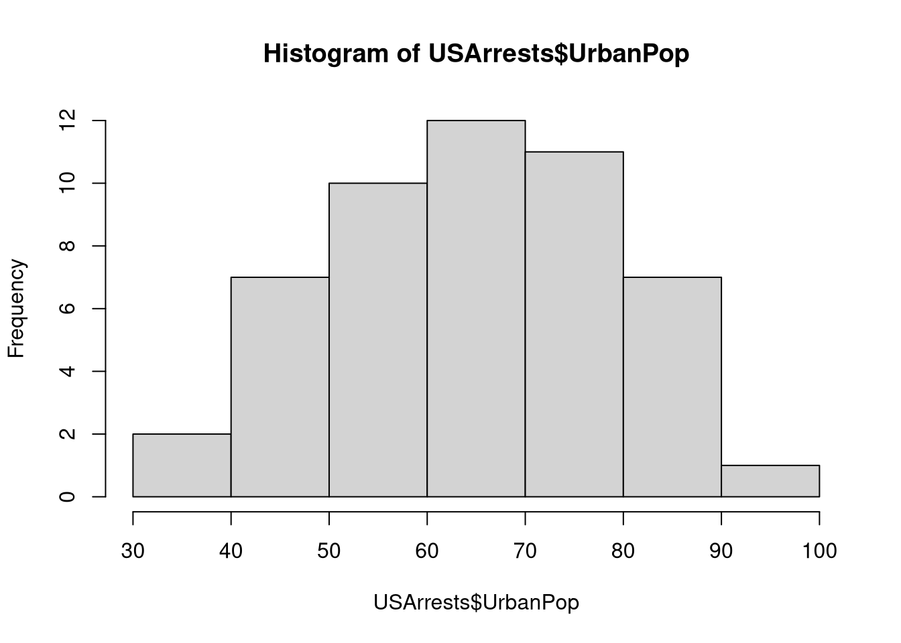
hist(USArrests$Rape)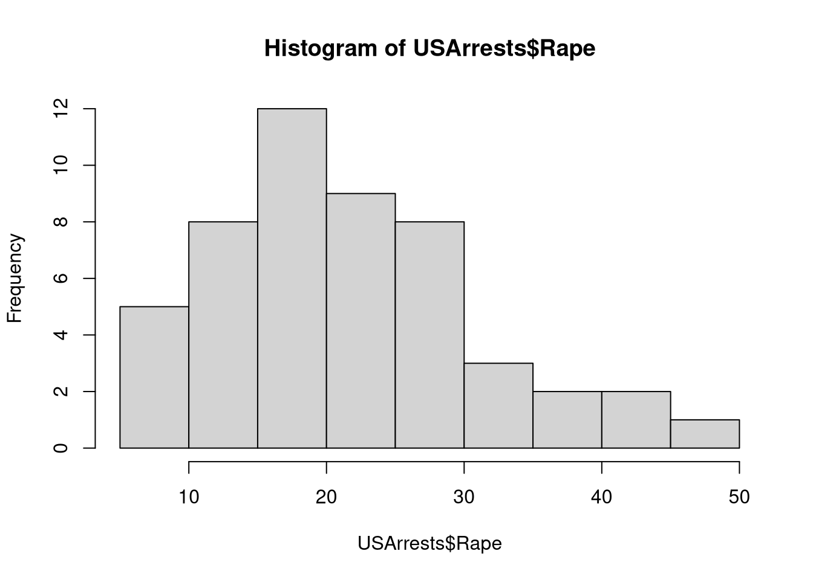
(c) Do you see any correlations between the four columns? Plot and comment
It looks like murder and rape are right skewed and urban pop and assault are somewhat normally distributed, though assault looks more bi-modal.
After looking at the plots below it looks like there’s some light correlation. I’m not sure if I should iterate and compare the other columns with each other, I imagine that’s the point of PCA as that would be tedious for a data set with more than a few columns.
ggplot(USArrests, aes(x=Murder,y=Rape)) + geom_point() 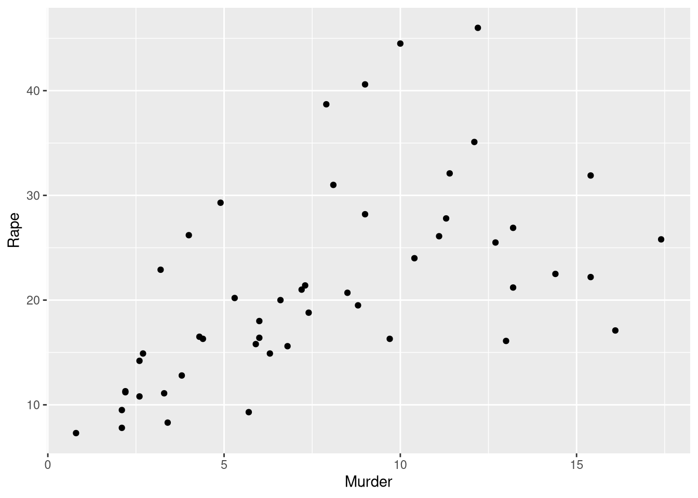
ggplot(USArrests, aes(x=UrbanPop,y=Assault)) + geom_point() 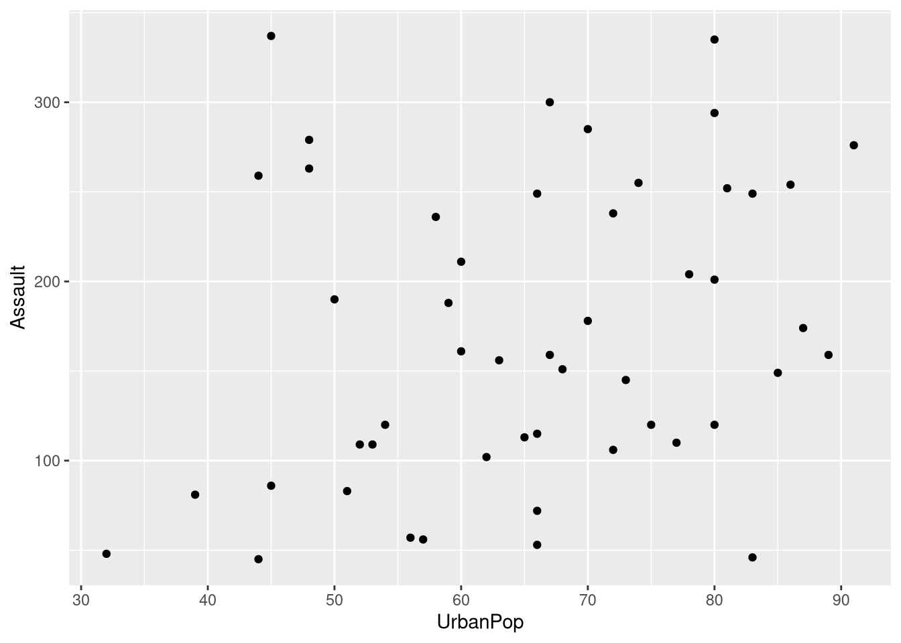
(d) Use prcomp() function to perform principal component analysis. Make sure you standardized the data matrix. Print a summary at the end.
#?prcomp()
pca_model = prcomp(USArrests,scale = TRUE)
#summary
summary(pca_model) Importance of components:
PC1 PC2 PC3 PC4
Standard deviation 1.5749 0.9949 0.59713 0.41645
Proportion of Variance 0.6201 0.2474 0.08914 0.04336
Cumulative Proportion 0.6201 0.8675 0.95664 1.00000#loadings = pca_model$rotation
#scores= pca_model$sccores QUESTIONS
What does PC1 represent
- first eigvec of correlation matrix
are all PC’s orthogonal with each other
what are the arrows on a biplot?
What is each data point when PC1 plotted vs. PC2
what below corresponds to \(Z_1 = \phi_{11}X_1 + ... + \phi_{p1}Xp\)
- first PC is a lin comb of p original variables
# columns here are loadings
pca_modelStandard deviations (1, .., p=4):
[1] 1.5748783 0.9948694 0.5971291 0.4164494
Rotation (n x k) = (4 x 4):
PC1 PC2 PC3 PC4
Murder -0.5358995 0.4181809 -0.3412327 0.64922780
Assault -0.5831836 0.1879856 -0.2681484 -0.74340748
UrbanPop -0.2781909 -0.8728062 -0.3780158 0.13387773
Rape -0.5434321 -0.1673186 0.8177779 0.08902432?prcomp(e) Obtain the principal vectors and store them in a matrix, include row and column names. Display the first three loadings.
negative PC1: state with a lot of murders moves to left of PC1. Higher values of variable associated with lower values of first PC.
PC2: states with higher murders / assaults will be in top part of biplot.
# each column below contains the loading vectors
# each entry is a loading
loading_matrix = pca_model$rotation
cat("Confirming that this is a matrix: ", class(loading_matrix),"\n")Confirming that this is a matrix: matrix array loading_matrix[1:4,] PC1 PC2 PC3 PC4
Murder -0.5358995 0.4181809 -0.3412327 0.64922780
Assault -0.5831836 0.1879856 -0.2681484 -0.74340748
UrbanPop -0.2781909 -0.8728062 -0.3780158 0.13387773
Rape -0.5434321 -0.1673186 0.8177779 0.08902432(f) Obtain the principal components (or scores) and store them in a matrix, include row and column names. Display the first three PCs.
# These points are projectings onto space spanned by loadings?
# Is there a projection matrix or? (V matrix, if you keep first two columns of V)
scores = pca_model$x
scores = scores[1:3,1:3]
scores PC1 PC2 PC3
Alabama -0.9756604 1.1220012 -0.43980366
Alaska -1.9305379 1.0624269 2.01950027
Arizona -1.7454429 -0.7384595 0.05423025(g) Obtain the eigenvalues and store them in a vector. Display the entire vector, and compute their sum.
eigvals = c(pca_model$sdev**2)
eigvals[1] 2.4802416 0.9897652 0.3565632 0.1734301sum(eigvals)[1] 4(h) Create a scree-plot (with axis labels) of the eigenvalues. What do you see? How do you read/interpret this chart?
This will help us understand how many principal components to retain based on whether or not there is an elbow present. Based on some of the criticism we discussed in class, it’s hard to tell where the elbow is - you could choose either 2 or 3 principal components probably based on what we see below.
plot(c(1,2,3,4),eigvals,type="l",xlab="principal component number")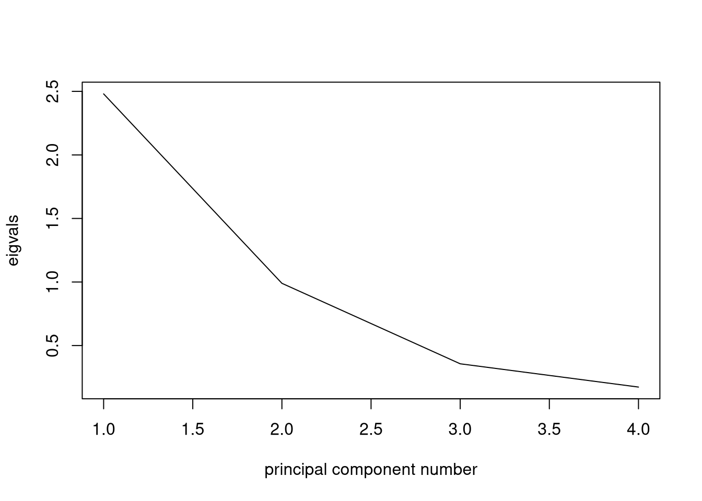
(i) Create a scatter plot based on the 1st and 2nd PCs. Which state stands out? Provide some explanations. In this plot you should annotate the points with state names.
“low score in PC1 resulted in….”
data = data.frame(x=pca_model$x[,1],
y=pca_model$x[,2],
z=pca_model$x[,0])
plot(data$x,data$y,xlab = "PC1", ylab="PC2")
text(data$x,data$y,row.names(data))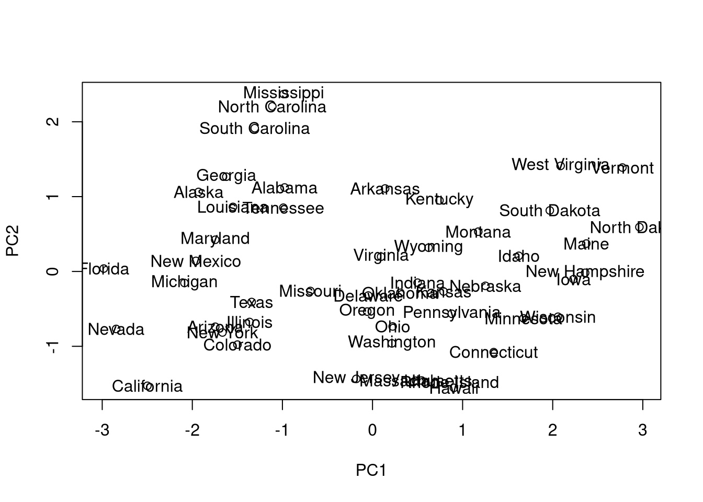
(j) Create the same scatter plot but color the states according to the variable UrbanPop.
data = data.frame(x=pca_model$x[,1],
y=pca_model$x[,2],
pop=USArrests$UrbanPop,
z=pca_model$x[,0])
plot(data$x,data$y)
text(data$x,data$y,row.names(data),col=data$pop)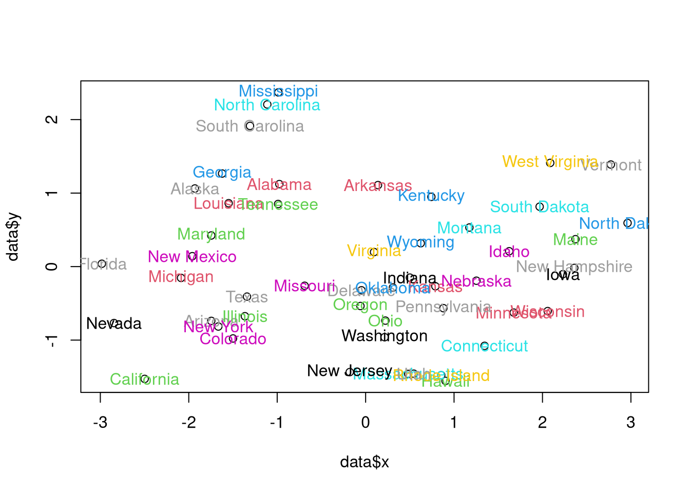
(k) Create a scatter plot based on the 1st and 3rd PCs. Comment on the difference between this plot and the previous one
ADD INTERPRETATION HERE
data = data.frame(x=pca_model$x[,1],
y=pca_model$x[,3],
z=pca_model$x[,0])
plot(data$x,data$y,xlab="PC1 ", ylab="PC3")
text(data$x,data$y,row.names(data))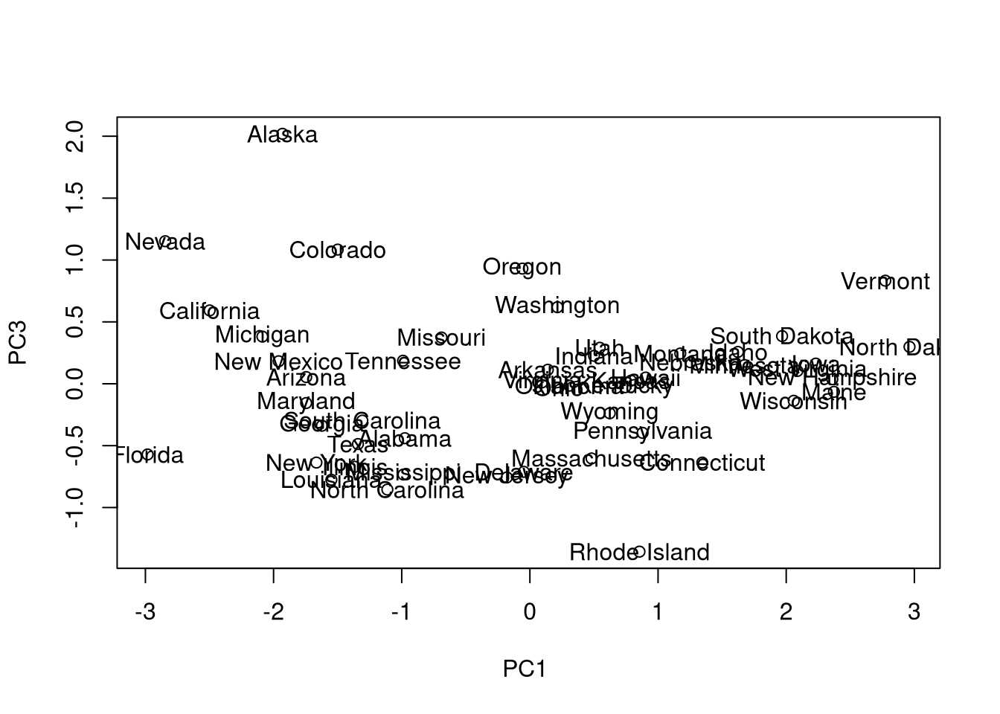